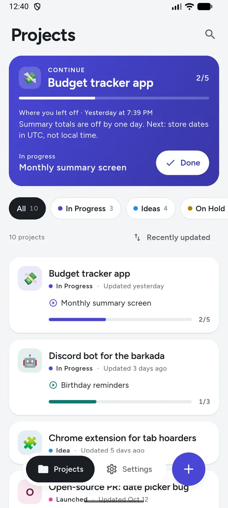

How to track side projects
Keep a list of ideas you might try and a shorter list of projects you’re working on. For each active project, write down what a first finished version looks like and one task that moves it forward.
Give ideas their own list
Capture a new idea with a name and one sentence about what you’d make. “Budget tracker that shows what I spent this week” is enough. You can come back to the details when you’ve decided to start.
Move an idea to your active list when you know what you want to make and when you’ll work on it next. If you can’t make time this week, leave it on the ideas list.
Define a first version you can finish
Describe one thing you want to be able to do or show. For a budget tracker, a first version might let you enter an expense and see it in the weekly total. Categories and charts can wait until you’ve tried that first version.
Make the next step easy to start
Give each active project a task you can try in one sitting. If a task reads “work on the app,” replace it with a verb and a finish line, like “Add an amount field and save one test expense.”
Project
Budget tracker app
First version
Enter an expense and see it in the weekly total.
Next step
Add the amount field and save one test expense.
Review the list before starting something new
Look at the next steps on your active projects. Pick one for your next session. If you’re putting a project aside, write down what still works and where you stopped. Those details are easy to forget after a few weeks.
In WipNest, you can save ideas separately from started projects and use the Continue card to get back to your most recent work.
